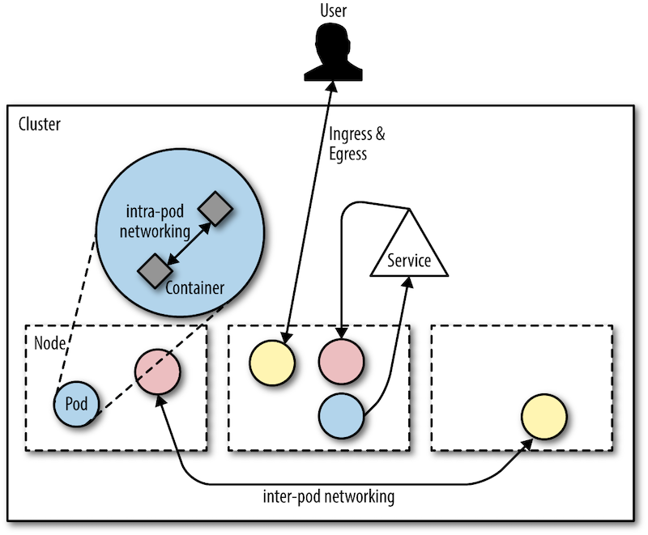

Policies¶
One important tool in the defense in depth strategy are policies. These define what is or is not allowed and part of it is usually an enforcement component. In this section we will have a look at a number of different policies and how you can apply them.
In the context of policies, the concept of least privileges is an important one, so let's have a look at this for starters.
Least privileges¶
With least privileges we mean to equip someone or something with exactly the
rights to carry out their or its task but not more. For example, if you consider
a program that needs to read from a specific location in the filesystem then
the operation (read) and the location (say, /data) would determine what
permissions are necessary. Conversely, said program would not need write access
in addition and hence this would violate the least privileges principle.
First off we start with the simple case of a Kubernetes security context, allowing you to specify runtime policies around privileges and access control.
Preparation¶
Let's create the cluster for it:
1 2 | |
Using a security context¶
We will be using an example from the Kubernetes docs so that you can read up on the details later on.
First, launch the pod with a security context defined like so:
1 | |
Next, enter the pod:
1 | |
And, in the pod, create a file as shown:
1 | |
What you see here is how the security context defined in the pod enforces file and group ownership. But who enforces the definition of security contexts? That is, how can you make sure that a developer creating a pod spec in fact thinks of this? Enter Pod Security Policies or PSP for short.
Learn more about least privileges practices in the container runtime context via:
- rootlesscontaine.rs
- canihaznonprivilegedcontainers.info
- SELinux as a resource in Kubernetes
- kubernetes-sigs/seccomp-operator
- Seccomp in Kubernetes
Clean up with kind delete cluster --name cnsectut when you're done exploring
this topic.
Network policies¶
So runtime policies are fun, but not the only thing that matters: next up, we have a look at network policies. These kind of policies allow you to control the communication patterns in-cluster (between pods) and concerning the outside world (ingress and egress traffic):

You might be surprised to learn that in Kubernetes by default all traffic (in-cluster and to/from the outside world) is allowed. That is, any pod can see and talk to any other pod by default as well as any connection to a pod running in your Kubernetes cluster.
Preparation¶
Let's create the cluster for the network policies walkthrough.
The following can take a minute or two, depending on if you've pulled the container images before or doing it the first time (then it can take 10min or more):
1 | |
Next, install the Calico controller and custom resources (this is the CNI plugin that allows us to enforce the network policies):
1 | |
Then, we need to patch the setup due to the fact we're using kind here
(kudos to Alex
for the patch instructions):
1 | |
Now you can verify the setup, and note that it can take some 5 min until
you see all pods in the Running state:
1 | |
Last but not least we install Ambassador as an ingress controller so that we can access to workloads from outside of the cluster:
1 2 3 | |
And with that we're ready to apply some network policies.
Limit ingress traffic¶
Now let's see network policies in action by creating a public-facing workload and define the communication paths.
First off, we want to do all of the following in a dedicated namespace called
npdemo:
1 | |
Now, create the workload (deployment, service, ingress):
1 | |
When you now query the endpoint defined by the ingress resource you deployed in the previous step you will find that it works as expected (remember: by default, all is allowed/open):
1 | |
Now we shut down all traffic with:
1 | |
And try again:
1 | |
As we'd have hoped and expected the access is now denied (might need to give it a second or so until the change is picked up).
But now, how do we allow traffic to the frontend (represented by the NGINX web
server)? Well, we define another network policy that allows ingress to stuff
labelled with role=frontend:
1 2 | |
And now it should work again:
1 | |
Learn more about network policies via:
- Exploring Network Policies in Kubernetes
- Best Practices for Kubernetes Network Policies
- Securing Kubernetes Cluster Networking
Clean up with kind delete cluster --name cnnp when you're done exploring
this topic.
General purpose policies¶
We have now seen container runtime policies as well as network policies in action. You should by now have an idea what policies are and how to go about defining and enforcing them. But did you notice one thing: for every type of policy, we had a different mechanism (and mind you, we only had a look at two types). Also, when you want to introduce further policies, for example, company ones or maybe stuff you need to do to be compliant with some regulatory framework such as PCI DSS. How do you deal with this in the context of containers?
Meet the CNCF Open Policy Agent (OPA) project.
OPA (pronounced "oh-pa") is a general-purpose policy engine that comes with a powerful rule-based
policy language called Rego (pronounced "ray-go"). Rego takes any kind of JSON
data as input and matches against a set of rules. It also comes with a long list
of built-in
functions, with from simple string manipulation stuff like
strings.replace_n(patterns, string) to fancy things such as
crypto.x509.parse_certificates(string).
Enough theory, let's jump into the deep end using the OPA Rego playground.
OPA in action¶
Let's say you have the following input data, which is an array of timestamped entries:
1 2 3 4 5 6 7 8 9 10 11 12 13 14 | |
So how can we check if a given entry is within a certain time window? For example, you might require that a certain commit is not older than a week.
The following Rego file defines the policy we want to enforce (with a fixed
point in time 2020-04-01T12:00:00Z as a reference):
1 2 3 4 5 6 7 8 9 10 11 12 13 14 15 16 17 18 19 20 21 22 23 24 25 26 27 | |
Applying above Rego rule set to the input data, that is, querying for
time_window_check[results] yields:
1 2 3 4 5 6 7 8 9 10 11 | |
You can try this online yourself via the prepared playground example.
OPA Gatekeeper¶
Now that you have an idea what OPA and Rego is you might wonder how hard it is to use OPA/Rego in the context of Kubernetes. Turns out that writing, testing, and enforcing these Rego rules is relatively hard and something that you don't want to push onto individual folks. Good news is that the community came together to tackle this problem in the form of the Gatekeeper project.
The Gatekeeper project solves the challenge of having to write and enforce Rego rules by using the Kubernetes-native extension points of custom resources and dynamic admission control.
As an end-user it's as simple as follows to use OPA with Gatekeeper. After installing Gatekeeper, define and apply a custom resource like the following:
1 2 3 4 5 6 7 8 9 10 11 | |
This constraint above requires that all namespaces MUST have a label test.
But where is the Rego rule set I hear you ask?
Gatekeeper employs a separation of duties approach where (someone other than the end-user) defines a template like so:
1 2 3 4 5 6 7 8 9 10 11 12 13 14 15 16 17 18 19 20 21 22 23 24 25 26 27 28 29 30 31 | |
Above template effectively represents a custom resource definition that Gatekeeper understands and can enforce via an Webhook registered in the Kubernetes API server.
Learn more about OPA and Gatekeeper via: